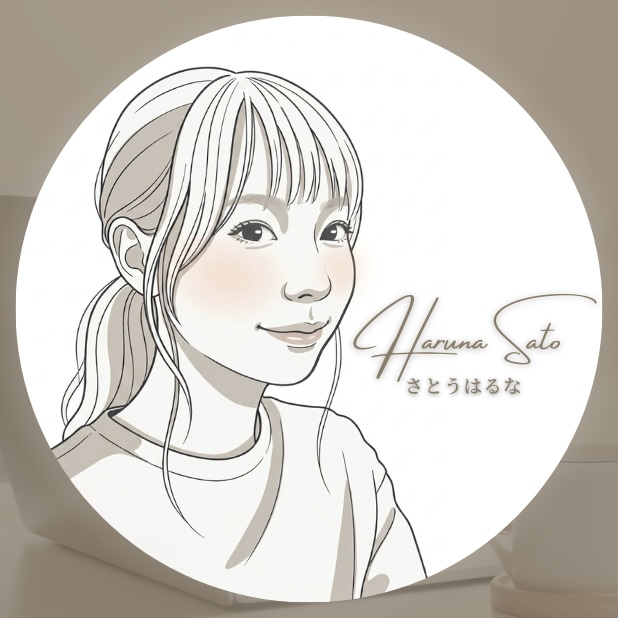

2016年〜2019年、株式会社ココトにてフロントエンド開発・デザインに従事。
その後フリーランスとしてweb開発に従事。
2022年〜育児のため休業中（2児の母）。
大手ECの保守開発からLP・WordPress案件まで幅広く対応した経験があります。
つくるものを通して人と人がつながり、新しい価値が生まれるお手伝いができればと考えています。詳細は下記の職務経歴をご参照ください。
Career
出産・育児のため休業（2児の母）
フリーランス（フロントエンドエンジニア）
SaaSの機能開発やWordPress案件に従事。テスト設計書や手順書などの資料作成も担当。
株式会社ココト（フロントエンドエンジニア・デザイナー）
入社時は自社の社内評価システムのフロントとバックエンドの開発に従事。2年目からは大手ショッピングサイトの保守開発とチーム管理を担当。OJTリーダーとして1年目の指導にもあたる。3年目では保守開発の他にリリース作業を担当。社内活動ではメンターとして1年目に教育。3年目後半では自社のWeb制作チーム立ち上げにて業務フロー構築、Webのデザインとコーディングを担当。
Experience
RaNa extractive, Inc.
大学時代に行っていたインターンアルバイト。アシスタントWebディレクターとしてペルソナの作成、顧客へのヒアリングとそれを元にサイトマップの作成などを担当。開発としてはJava、PHPを活用したWebページの制作、テスト仕様書の作成、テスト実施を担当。
Technical
Works